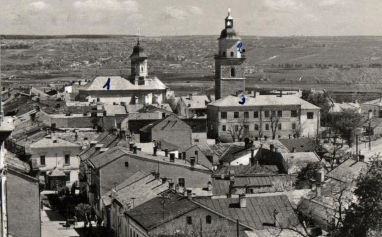
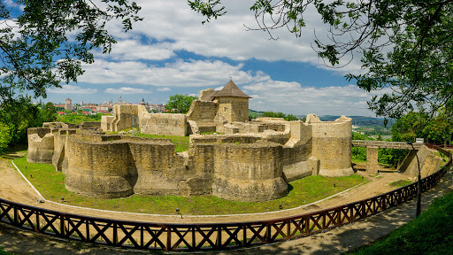

Suceava is the largest city and the seat of Suceava County, situated in the historical region of Bukovina, north-eastern Romania, and at the crossroads of Central and Eastern Europe. During the late Middle Ages, more specifically from 1388 to 1564, the city was the third capital of the Principality of Moldavia. From 1775 and 1918, Suceava was controlled by the Habsburg Monarchy, initially part of its Kingdom of Galicia and Lodomeria, then gradually becoming the third most populous urban settlement of the Duchy of Bukovina, a constituent province of the Austrian Empire and subsequently a crown land within Austria-Hungary. It was only surpassed by Cernăuți and Rădăuți, both located to the north. Furthermore, given its diverse ethnic background during the late Modern Age, Austrian architect Rudolf Gassauer stated that the city of Suceava could have well been perceived back then as a 'miniature Austria'.
- History

- The present-day territory of the city of Suceava and the adjacent surroundings were already inhabited since the Paleolithic period. Stemming from the late Antiquity, there are also traces of Dacian oppidum of the 2nd century. In stark contrast to several historical regions of Romania (most notably Transylvania and Oltenia), Suceava (along with the entire region of Bukovina for that matter) was not conquered by the legions of the Roman Empire and consequently was one of the lands of the Free Dacian tribes during the late Ancient Age. Nonetheless, according to Ptolemy, at that time in the region also dwelled two likely Celtic-speaking tribes, specifically the Anartes and the Taurisci,[29] as well as the Germanic Bastarnae, who have also been attested there. After the fall of Rome and during the Migration Period, the predominantly Carpiani population was successively invaded by East Germanic peoples (such as the Goths or the Gepids), Huns, Slavs, Magyars, Pechenegs, and ultimately Cumans. During the Late Middle Ages, the city of Suceava was the capital of the Principality of Moldavia and the main residence of the Moldavian princes for nearly two centuries (namely between 1388 and 1564). The city was the capital of the lands of Stephen the Great, one of the pivotal figures in Romanian history, who died in Suceava in 1504. During the rule of Alexandru Lăpușneanu, the seat was moved to Iași in 1565 and Suceava failed to become the capital again. Michael the Brave captured the city in 1600 during the Moldavian Magnate Wars as he became the ruler of Wallachia, Moldavia, and Transylvania, but he was defeated the same year. During the late 19th century and early 20th century, the city was the third largest in the Duchy of Bukovina, after Cernăuți and Rădăuți. Throughout this period of time, the Habsburgs and, later on, the Austrians, attracted many ethnic Germans from abroad to settle down in Bukovina and, implicitly, in the contemporary city of Suceava, then just a small market town. Over the passing of time, these newly arrived German settlers and their descendants became collectively known as Bukovina Germans. Additionally, at that time, on an administrative level, the city of Suceava was part of a namesake bezirk with a total population of 66,826 inhabitants. In 1918, the city of Suceava became part of what is known as 'Greater Romania', after an overwhelming vote of the German, Romanian, and Polish representatives of the General Congress of Bukovina. All 7 political representatives of the Bukovina Germans led by Alois Lebouton voted for the union of Bukovina with the Kingdom of Romania. Throughout the interwar period, Suceava undergone further infrastructural development within the then enlarged Kingdom of Romania. Moreover, from an administrative point of view, it had also briefly belonged to Ținutul Suceava (between 1938 and 1940), one of the 10 lands established during King Carol II of Romania's reign. Subsequently, from the 1950s onwards (along with the onset of Communism), Suceava was heavily industrialized and a significant series of historical buildings from its old city centre (more specifically the entire Franz Josef Straße)[45] were demolished in order for Plattenbau-like blocks of flats to be constructed at the orders of the Communist officials.
Culture

Suceava is the place of several medieval sites that are closely linked to the history of the former Principality of Moldavia. By far the most significant (and at the same time the most well preserved one) is the Seat Fortress of Suceava (Romanian: Cetatea de Scaun a Sucevei) or Suceava Citadel, a medieval castle situated on the eastern edge of the contemporary city. The fortress was built during the reign of Petru of Moldavia (1375–1391), also known as Petru Mușat. It was further expanded and strengthened during the reigns of Alexander I of Moldavia (1400–1432) and Stephen the Great (1457–1504). The medieval castle was part of the fortification system built in Moldavia during the late 14th century, given the emergence of the Ottoman danger. It even became strong enough to hold off an attack by Ottoman sultan Mehmed II (the conqueror of Constantinople) in 1476. Suceava was the capital city of the former Principality of Moldavia between 1388 and 1565. During this period, the castle served as princely residence. Alexandru Lăpușneanu had subsequently moved the Moldavian capital to Iași in 1565, so the castle lost its status. Afterwards, the citadel entered a period of steep decline. In 1675, during the reign of voivode Dumitrașcu Cantacuzino, the fortress was destroyed. Then, for over two centuries, the castle was completely deserted.